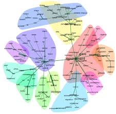

For my review I have picked IRaMuTeQ and Xournal++, i believe that these are two tools that are very useful in the space for humanities research.

IRaMuTeQ is a free and open source tool that that is used to analyse big amounts of data in text form like interviews, articles and documents (IRaMuTeQ, 2024) it looks for word frequency and patterns in the text. This tool peaked my interest as it allows researchers to look at large text and documents in a more systematic and well structured way.

Xournal++ is a free tool this is made for digtal note taking and build for PDF annotation tool that lets users to write notes by hand and also lets users add comments directly onto documents. (Xournal++, 2024) i believe this tool is very useful in the humanties space as its great for close reading and engaging directly with a text or PDF. I think it would be very usful for stundents and rearchers as it would let them highlight annotate and record there thoughts while reading texts. I also picked Xournal++ as I am a linux user and have needed a tool in the that helps me to annotate text.
My review of these tools wwill look at how both of them support different parts of the research process in DH (Digital humanities) I will look into how IRaMuTeQ is linked to distant reading and research while Xournal is built for indetail and close reading.
IRaMuTeQ was created in france by Pierre Ratinaud based on python and R. R is a programming language that is used for statistics The name stands for "Interface de R pour les Analyses Multidimensionnelles de Textes et de Questionnaires (IRaMuTeQ, 2024) ifound this tool using https://tapor.ca/tools (https://tapor.ca/tools/1575). IRaMuTeQ was desigened to make advanced text analyses highly accessible for people who wish to research in a distant reading way and it is also build for researchers who do not have any coding experience.
The software is free and open source and runs on all main stream operating systems such as Windows Mac and Linux IRaMuTeQ is build and based on the statical methods developed by max reinert in the 1990s. This method groups words and sentrences together based on how often they appear. This method allows researchers to see themes and idenitfy patterns in large collections of texts. In DH this method is known as distant reading. This term was made by Franco Moretti(2013) distant reading means looking at many texts at once to find patterns rather than reading a text closely.
Many people and resreahers have used IRaMuTeQ for academic purposes. For example it was used to analyse political speeches, news articles, and interview transcripts (Camargo and Justo, 2018)
Xournal had a much different start compaired to IRaMuTeQ. It bbegan as Xournal in 2006 and was rewritten as Xournal++ in 2016 (Xournal++, 2024). It was mustly a ran by a small group of volunteers and is also 100% free. The tool is build for note taking and uses a pen and mouse to write notes. You can also type text and highlight PDF files.
I think it is a great tool for DH as it allows for close reading and note taking. Close reading is a very old method used in litery studies where one text is looked at very closly for meaning, style and structure (Rockwell and Sinclair, 2016). Digital annotation tools like Xournal++ help this practice by letting readers mark up texts and write down there thoughts as they read. Unlike IRaMuTeQ, Xournal++ does not analyse text for you. It relies on the user to read and interpret the text.
To use IRaMuTeQ i had to download it from the website. I am a Linux user so I had to install R and Java through the terminal which was fine for me but for someone not used to the command line it might be even harder than on Windows. Some Linux distributions also need extra dependencies so you have to read the install guide carefully.
The interface is not very nice. It looks old and it is not easy to find things. The menus are in french when you first open it. You can change it to english but some buttons are still in french. Error messages are very technical and dont help much. But even with all that the tool is very powerful and you cant beat the fact that it is free.
One good thing is privacy. IRaMuTeQ works offline and your files stay on your computer. Nothing goes to the internet. This is good if you have private data.
Xournal++ was way easier. I downloaded it and it worked straight away. On Linux it was in the package manager so i just used sudo apt install xournalpp and it was done. The interface is clean and simple. I opened a PDF and i could highlight text, draw shapes and write notes with my touchpad. If you have a tablet it would be better but it still works without one.

The best thing about Xournal++ is the flexibilty. It feels like writing on paper. You can add blank pages, organise pages and export the file as a new PDF. This is good for keeping all your notes in one file. You can also add typed text and shapes if you want to draw diagrams.
But Xournal++ is not perfect. It does not have OCR. That means if you write notes by hand you cant search for them later. If i write "exam question" in the margin i cant search that word and find it again. This is a big problem if you annotate lots of files. It also does not sync to the cloud. You have to save your files yourself and back them up or you might lose them.
There is also no way to work with other people. You cannot share annotations live and two people cannot edit the same file at once. For one person working alone it is great. For group work it is not good.
Like IRaMuTeQ, Xournal++ works offline and does not collect your data. No account needed.
Voyant Tools is another free text analysis tool but it runs in your browser (Voyant Tools, 2024). It was made by Stéfan Sinclair and Geoffrey Rockwell who are both DH scholars. Like IRaMuTeQ it helps you find patterns in text without coding.
The big difference is how you use it. Voyant Tools is on the web. You dont install anything. You just go to the site, upload your files and it works. IRaMuTeQ you have to download and install and you need R and Java. For a beginner Voyant Tools is much easier.
The interface is also very different. Voyant Tools looks modern and has lots of panels that show different things at once. You can see a word cloud, a frequency graph and a concordance all on one screen. IRaMuTeQ has one window and you run things one by one. Voyant Tools is nicer to look at and easier to click around.
IRaMuTeQ has deeper analysis though. Voyant Tools does frequency and trends and keywords. It does not have Reinerts method or factor analysis. For simple projects and teaching Voyant Tools is better. For big serious research IRaMuTeQ is stronger.
File prep is also different. Voyant Tools takes PDF and Word files. IRaMuTeQ needs plain text with special formatting. Voyant Tools is faster to use. But Voyant Tools sends your files to their server. If your data is private that might be a problem. IRaMuTeQ keeps everything on your computer.
Both tools are free and people use them in DH. They do similar things but for different users.

PDF Expert is a paid PDF tool made by Readdle for Apple stuff (PDF Expert, 2024). It is not free but it is very popular. Comparing Xournal++ and PDF Expert shows you what free open source vs paid software looks like.
The first thing is money. Xournal++ is free. PDF Expert costs money. If you are a student with no cash Xournal++ is the one. But PDF Expert has features Xournal++ does not. It has OCR. That means you can search your handwritten notes. If you have lots of scanned documents this saves so much time.
Another thing is what devices you can use. Xournal++ works on Windows, Mac and Linux. PDF Expert only works on Apple. If you have a Windows laptop or Linux you cant use PDF Expert at all. Xournal++ works everywhere. This is why i picked it. I use Linux and there is no PDF Expert for me. On Linux Xournal++ is one of the only tools that really works well for handwritten annotation.
For actually annotating both tools let you write, highlight and draw. PDF Expert feels smoother on iPad and the handwriting looks better. Xournal++ works fine but it is less fancy. But Xournal++ lets you add blank pages and make notebooks. PDF Expert is just for PDFs.
Syncing is another difference. PDF Expert works with iCloud and Dropbox. Xournal++ has no syncing. You have to email files to yourself or use a USB. If you work on multiple computers this is annoying. As a Linux user i just save everything to a Nextcloud folder so i can access it on other devices but you have to set that up yourself.
For me Xournal++ is enough. I cant pay for PDF Expert and Xournal++ does the job. But if i had an iPad and lots of scanned PDFs i would want PDF Expert. OCR is a big deal.
Using these two tools has shown me how different digital humanities tools can be. IRaMuTeQ is for big text and stats. Xournal++ is for slow reading and handwriting. They are opposites.
I dont think either tool is perfect for what i do now. IRaMuTeQ is too hard for my little projects. Learning the file setup and the french menus took ages and i only had ten articles. If i had a hundred articles it would be worth it. For a thesis or big project yes. For a class assignment no. Being on Linux didnt make IRaMuTeQ any easier or harder once it was installed but the file prep is the same on every system.
If i keep using IRaMuTeQ i need better help guides. The website has tutorials but some are in french and some are old. The forum is quiet. The tool is powerful but the english support is weak. I think the developers should make new english tutorials and translate all the menus properly.
Xournal++ fits me better. I already read PDFs and take notes. Xournal++ lets me write like i do on paper. The handwriting is why i use it. But i really want OCR. If i could search my handwritten notes it would change everything. I also want a simple backup option. Even just a save to Google Drive button. I am scared i will lose my annotations.
I use Linux and Xournal++ is one of the only tools that works well. Most annotation apps are Windows or Apple only. I am glad Xournal++ exists and people still update it. On Linux it is usually in the official repos and updates come through the package manager which is nice.
I would tell other students to use Xournal++. If you like handwriting and want to save paper it is great. If you have a touchscreen it is even better. It is also good if you work with private files and dont want them online. For Linux users it is probably the best free PDF annotation tool available.
I would not tell a beginner to use IRaMuTeQ. Start with Voyant Tools. It is easier and you will learn faster. Later if you need more power try IRaMuTeQ.
One worry with IRaMuTeQ is reproducibility. You can save your outputs but the analysis changes depending on how you set up the files and which buttons you click. Two people could run the same texts and get different graphs. To do good research you have to write down every step and share your prepared files.
With Xournal++ your notes are in the PDF. Someone else can open it and see exactly what you wrote. That is more transparent.
So yeah IRaMuTeQ and Xournal++ are both useful but for totally different reasons. IRaMuTeQ is for distant reading and big text collections. It is hard to learn but very powerful. Xournal++ is for close reading and annotating PDFs. It is easy to use and great for everyday work.
Both tools have good sides and bad sides. Neither is the perfect tool. But they both show how digital tools can help with humanities work. IRaMuTeQ helps you see patterns across hundreds of texts. Xournal++ helps you read one text really carefully. Using both together would be a good way to work.
Camargo, B.V. and Justo, A.M. (2018) 'IRaMuTeQ: A free software for textual data analysis', Temas em Psicologia, 26(4), pp. 1835-1848.
IRaMuTeQ (2024) IRaMuTeQ homepage. Available at: http://www.iramuteq.org/ (Accessed: 10 February 2026).
Moretti, F. (2013) Distant reading. London: Verso.
PDF Expert (2024) PDF Expert homepage. Available at: https://pdfexpert.com/ (Accessed: 10 February 2026).
Reinert, M. (1996) 'Les mondes lexicaux et leur logique à travers l'analyse statistique de divers corpus', Lexicometrica, 9, pp. 55-76.
Rockwell, G. and Sinclair, S. (2016) Hermeneutica: Computer-assisted interpretation in the humanities. Cambridge, MA: MIT Press.
Voyant Tools (2024) Voyant Tools homepage. Available at: https://voyant-tools.org/ (Accessed: 10 February 2026).
Wolfe, J. (2002) 'Annotation technologies: A software and research review', Computers and Composition, 19(4), pp. 471-497.
Xournal++ (2024) Xournal++ homepage. Available at: https://xournalpp.github.io/ (Accessed: 10 February 2026).